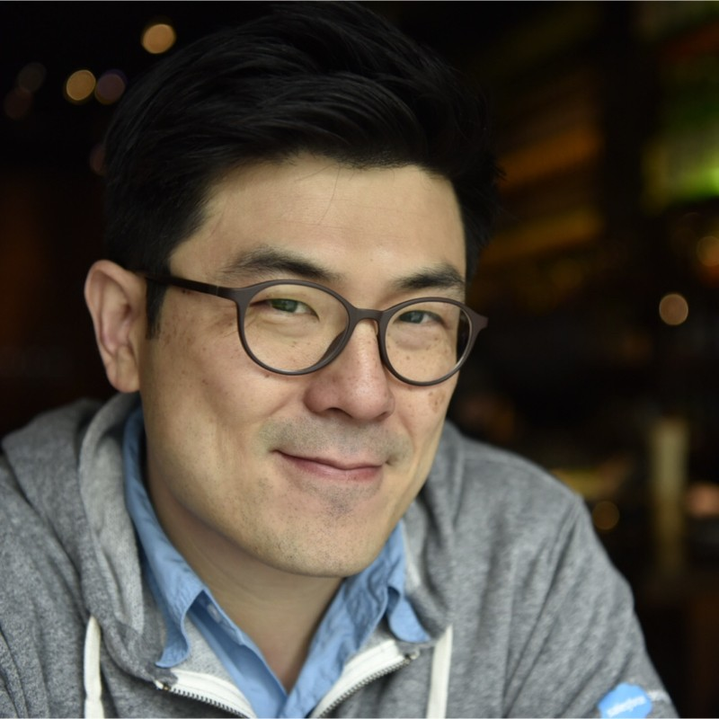
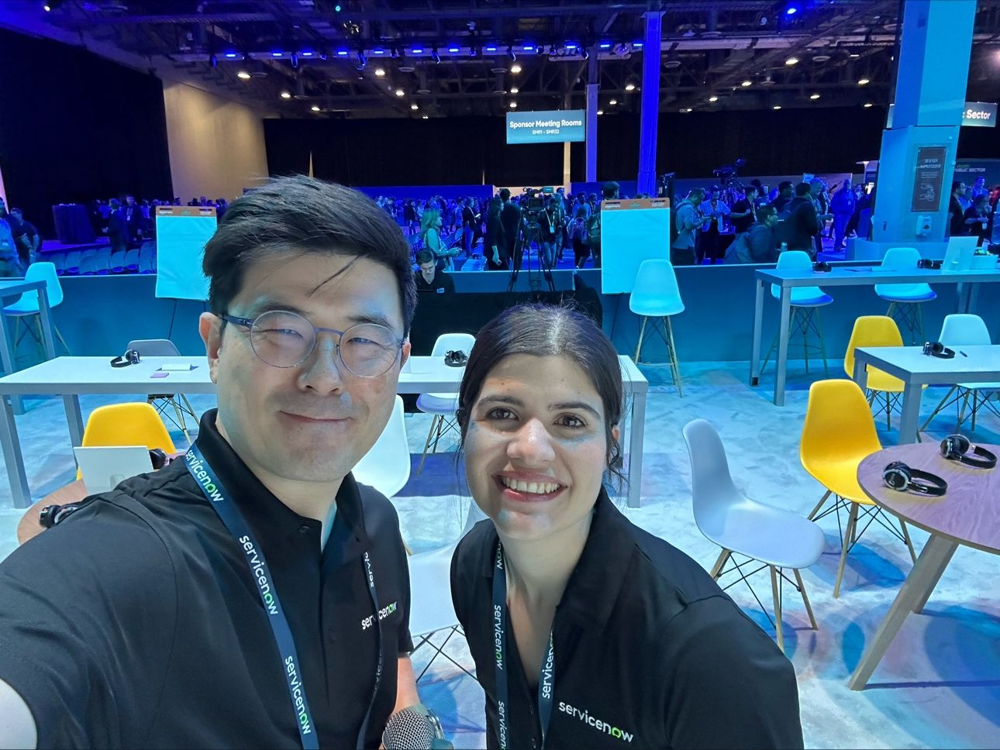

I'm George Hu, a Principal Product Designer with over 8 years of experience working across consumer apps, enterprise platforms, and healthcare products. My process is grounded in user research, systems thinking, and close collaboration with engineering and product teams.
I believe the best designs are invisible — they get people where they need to go without friction or confusion. Whether I'm running discovery workshops or refining micro-interactions, I'm always working backward from the person using the product.
Outside of work I'm interested in typography, film photography, and building small tools that solve personal problems.
Experience
Principal Product Designer
Leading design across three product lines, managing a team of four designers, and establishing the company's first design system.
Senior Product Designer
Designed end-to-end experiences for healthcare and fintech clients, from discovery through launch.
Product Designer
Worked with early-stage startups on mobile apps, brand identity, and growth-focused landing pages.